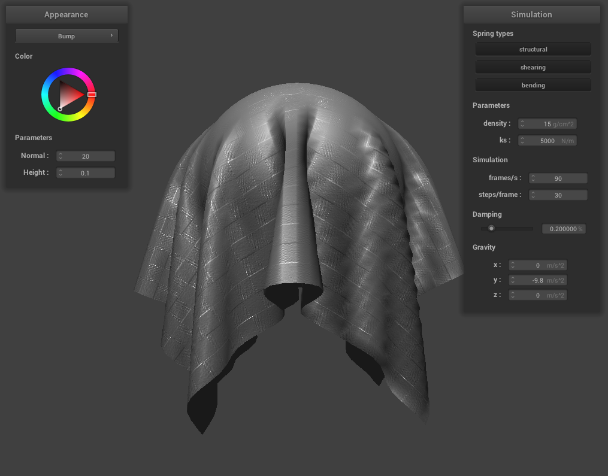

Overview
In this project, I build a cloth simulation by modelling it as an interlinked grid of 3 types of springs.
I implement the springs, the simulations, the collision with spheres and planes. I also implement self collisions,
and a series of custom shaders in GLSL. Implementing the shaders was the most interesting part,
because we wrote code that runs directly on the GPU.
Also, the website can be found here
Part 1: Masses and springs
The implementation of this part involves iterating over each index in the grid, and calculating the real world coordinates for that point.
Then I create a point mass at each point, and set whether it has been pinned or not by checking for the existance of the position in the pinned vector.
The next step was to create a vector of springs. I iterate over each point in the grid, and then add springs of each type, based on whether the other pointmass
exists or not. Here are the results for this part:
|
Figure 1: Without shearing springs
|
|
Figure 2: With only shearing springs
|
|
Figure 3: With all springs
|
Part 2: Simulation via numerical integration
The method of performing this simulation is to calculate the total
forces being applied on each point mass, and then applying verlet
integration to find the change in position.
We also constrain the position update so that the cloth so that the change
in distance is limited.
In this section, i will analyse the differences to the simulation with
respect to various parameters
Spring Constant (ks)
Ks changes the "desire" of the spring to return to its original shape.
When the Ks is very low, we can see that the cloth has a higher number
of smaller creases, and does not mind changing its shape. It bends
and sags a lot.
On the other hand, making ks larger makes the cloth bend less overall
and it seems tight. (Section 3 results show this effect too)
During the simulation, for a low ks, the cloth blends a lot and falls into place. It takes
much longer to reach a rest state.
But for a high ks, it settles much faster, and all the cloth particles dont distort much
as they fall: they dont bend a lot.
When the Ks is low, it seems to behaves more like silk,
but when it is high, it behaves like a Tarpaulin.
|
Figure 4: ks = 50
|
Figure 5: ks = 500
|
|
Figure 6: ks = 5000
|
Figure 7: ks = 10000
|
Density
Density affects how much gravity acts on each portion of the cloth.
When the density is very low, the cloth almost seems to rotate around the
line that connects the pinned points, and falls as a rectangle. In the steady state,
it has almost no sag.
But, when the density is very high, the cloth stretches more, and falls while bending a lot.
The sag is much higher than in the other case.
|
Figure 8: Density = 1
|
Figure 9: Density = 5
|
 Figure 10: Density = 15
Figure 10: Density = 15
|
Figure 11: Density = 50
|
Damping
Damping affects how fast the cloth comes to a resting pose. When at 0, the simulation takes
almost infinite time to come to a resting pose: It keeps oscillating. This is because there
is virtually no loss of
energy. The cloth keeps swinging. When the damping is set to 1, the cloth falls very slowly,
and almost uniformly towards the ground, barely oscillates, and comes to a halt.
Pinned at 4 points
Here is the cloth when pinned at the 4 corners using pinned4.json.
Part 3: Handling collisions with other objects
To handle collisions with any object in this part, the process was the same. If the
cloth collided with the object, then apply a correction vector to the position of the
point mass that offset it back up to the initial side of the collision.
As explained in section 2, k2 affects the ability of the cloth to retain the shape. When the
ks = 5, the cloth fully draps the sphere, and as the ks goes up to 50000, it retains a large
postion of the original shape, and we can still make out the square shape.
|
Figure 13: ks = 5
|
Figure 14: ks = 500
|
|
Figure 15: ks = 5000
|
Figure 16: ks = 50000
|
 Figure 17: Shaded cloth lying peacefully at rest on the plane
Figure 17: Shaded cloth lying peacefully at rest on the plane
|
Part 4: Handling self-collisions
Instead of checking for collisions betweens each set of points, we divide the scene into a
grid, and check for collisions between each point inside each grid cell. This way we dont have
a N^2 algorithm. The grid is stored as a hash map that maps each position from a float to a
list of points. In the first image, we can see the small chagnes in the z coordinate. In the last
image, we can see the cloth slowly spreading out again because of lack of friction between itself.
Here are the basic results:
|
Figure 18: Before Simulation
|
Figure 19: Initial Collisions
|
|
Figure 20: Towards the End
|
Figure 21: At a Steady State
|
Spring Constant (ks)
When varying ks, we can see that for a small ks, the coth bends more, and is more influenced by the noise.
As this increases the springs tend to not bend as much and this effect can be seen in Fig 23.
|
Figure 22: ks = 1000
|
Figure 23: ks = 50000
|
Density
Density only affects the weight of the cloth. This means that as the density increases, the cloth falls
faster. Also, this makes the cloth crumblw more, because the springs bend more under more weight. When the cloth
has a low density, It falls slowly, and doesnt bend as much.
 Figure 24: Density = 5
Figure 24: Density = 5
|
 Figure 25: Density = 20
Figure 25: Density = 20
|
Part 5: Shaders
A shader program is a program that runs on the GPU. It is used to parallelize tasks
like rendering, and even computing. Vertex shaders are used to convert model space
coordinates to screen space. They run once per vertex. Fragment shaders are used to
set a color for each pixel. They are run for each point to be rendered, and can
therefore run hundreds of thousands of times more than the vertex shaders.
The vertex shaders are run first, and the fragment shaders after that.
Blinn-Phong Shader
The Blinn-Phong shading model consists of 3 parts of lighting: Ambient, specular,
and diffuse. The ambient section provides a constant light to every part of the object.
The specular lighting provides specular highlights - shine. And the diffuse component gives
the image shadows, and a matte base. Combining the 3 gives us a shiny texture.
|
Figure 26: Ambient component only
|
Figure 27: Specular component only
|
|
Figure 28: Diffuse component only
|
Figure 29: All put together
|
Texture Mapping Shader
For this part, I replaced the berkeley Campanile image with the logo of Purdue
University (Boiler Up!). The before and after simulation images are shown below.
I made sure to use a png with the same dimensions as the original image.
|
Figure 30: Before simulation
|
Figure 31: After simulation
|
Bump and Displacement Mapping Shader
In these 2 shaders, we attempt to provide details by manipulating the shadows and the mesh.
In bump mapping, we change the normals based on a height map from an image. The mesh geometry
remains unchanged. However, in displacement mapping, we raise the vertices based on the height
at that point. This gives the obejct a more realistic looking shape, and with the correct
shading.
In the following images, I show the effect of bump and displacement mapping. For bump mapping,
I had to increases the size of the normals to show the effect more clearly. Between the two cloths
of resolution 16x16 and 128x128, We can see that there are visibly less edges in the outline of the
high resolution one. Also notice that there are no actual bumps that can be seen on either of these
4 images. Moving on to displacement mapping, we can see the visible changes to the vertices in the straight
cloth images, where the cloth is raised based on the texture. The height had to be adjusted to make
the effect clear, and because that scales the bump mapping, the normals had to be readjusted.
|
Figure 32: Bump, Sphere, 16x16
|

Figure 33: Bump, Cloth, 16x16
|
|
Figure 34: Bump, Sphere, 128x128
|
Figure 35: Bump, Cloth, 128x128
|
|
Figure 36: Disp, Straight Cloth, 16x16
|
Figure 37: Disp, Cloth, 16x16
|
|
Figure 38: Disp, Straight Cloth, 128x128
|
Figure 39: Disp, Cloth, 128x128
|
Mirror Shader
|
Figure 40: Mirror Shader (Sphere)
|
 Figure 41: Mirror Shader (cloth)
Figure 41: Mirror Shader (cloth)
|